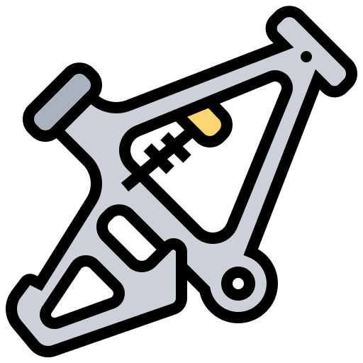

Orientation Bac PC 2026

Guide simple pour les élèves de Bac Sciences Physiques au Maroc. Découvrez les écoles, les filières et les possibilités après le bac.
Découvrir les écoles
Guide simple pour les élèves de Bac Sciences Physiques au Maroc. Découvrez les écoles, les filières et les possibilités après le bac.
Découvrir les écolesLes choix les plus populaires pour les étudiants en Sciences Physiques.
École nationale des sciences appliquées.
Filières : Génie Informatique, IA, Réseaux, Génie Civil, Électrique...
Durée : 5 ans
Description : Formation d’ingénieurs avec plusieurs spécialisations modernes.
École nationale de commerce et de gestion.
Filières : Finance, Marketing, Gestion, Commerce International...
Durée : 5 ans
Description : Formation en business et management.
Classes préparatoires aux grandes écoles.
Filières : MPSI, PCSI, TSI, ECS, ECT, BCPST....
Durée : 2 ans + concours
Description : Parcours intense pour accéder aux grandes écoles d’ingénieurs.
Faculté des sciences et techniques.
Filières : Informatique, Mathématiques, Génie Électrique...
Durée : 3 à 5 ans
Description : Formation scientifique avec possibilité de cycle ingénieur.
Institut des professions infirmières et techniques de santé.
Filières : Infirmier, Radiologie, Laboratoire...
Durée : 3 ans
Description : Formation dans les métiers de la santé.
Études médicales et paramédicales.
Filières : Médecine, Pharmacie, Dentaire
Durée : 6 à 7 ans
Description : Études médicales pour devenir médecin ou pharmacien.
École nationale d’architecture.
Filières : Architecture
Durée : 6 ans
Description : Design, dessin et conception architecturale.
Formation professionnelle.
Filières : Développement Digital, Réseaux, Design...
Durée : 2 ans
Description : Formation pratique orientée marché du travail.
École supérieure de technologie.
Filières : Informatique, Gestion, Réseaux...
Durée : 2 ans
Description : Études techniques et professionnelles.
Brevet de Technicien Supérieur.
Filières : Développement des Systèmes d’Information, Cybersécurité, Réseaux...
Durée : 2 ans
Description : Formation technique courte et très orientée vers le marché du travail.

Choisis ENSA, FST, EST ou OFPPT si tu aimes le développement et les technologies.
Médecine et ISPITS sont parfaits pour les étudiants passionnés par le domaine médical.
ENCG et ISCAE sont idéales pour la finance, le marketing et le business.

ENSA, ENSAM et CPGE sont de très bons choix pour devenir ingénieur.
Filières :
Durée :
Niveau conseillé :